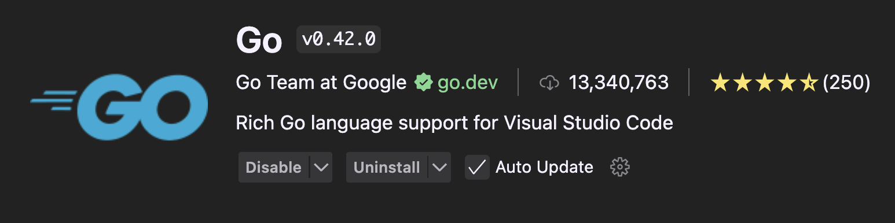

Stuff to install
We will be using Visual Studio Code (VSCode) as our editor, and we will be using the terminal to run our code. We also need Go (obviously—it is part of the course) and extensions for VSCode to make our lives easier.
Later on we will be using Git, Docker and Dagger, but install instructions for those follow in later sections and are not necessary for now.
You may know what Git is about, but Docker and Dagger are probably new to you. Don't worry, we will cover them in later lessons.
Important: If you are running Windows, you will need to install WSL2. The development stack has certain requirements and a *nix environment (MacOS/Linux) is one of them.
What you need to install
- Visual Studio Code (latest version, 1.105.1)
- Go (latest version, 1.25.0)
- Git (latest version, 2.51.2)
- Docker Engine (latest version, 28.5.1), can be installed with Docker Desktop (latest version, 4.50.0)
- Dagger (latest version, 0.19.6)
Versions are as of writing this course (November 2025).
Note: Other Visual Studio Code based IDEs, such as Cursor or Windsurf, can be used as well, but you cannot expect support from TAs if you use them instead. The only caveats are that the IDEs are version wise behind VSCode and extensions are only available in older versions.
Using Homebrew for package management is recommended. You can install Homebrew by following the instructions here. Homebrew only works on MacOS and most Linux distributions.
Note: If you are running on Windows, using WSL2 is recommended. You can install it by following the instructions here. Ubuntu is recommended as the Linux distribution.
Visual Studio Code
- Install VSCode from here.
Go
Install Go from here or if you are using Homebrew, run
brew install go.Install the following Go extension in VSCode:  This will install several tool integrations in VSCode and most importantly the Go LSP. Install the most recent version. Currently it is v0.48.0.
Git
- Install Git from here or if you are using Homebrew, run
brew install git.
WSL = Windows Subsystem for Linux LSP = Language Server Protocol
Let's see if it works
Go Test
Hello World in Go!
Don't worry about the code for now. You will get to understand it when we go through the fundamentals.
Create a new file called main.go:
package main
import "fmt"
func main() {
fmt.Println("Hello, World!")
}
Run:
go run main.go
You should see something that is not an error >D
Git Test
Let's verify Git is working properly:
git version
You should see the Git version number displayed.
Docker Test
Let's check if Docker Engine is running:
docker --version
You should see the Docker version information.
Note: If it says Docker is not running, you may need to start Docker Desktop.
Run a simple container:
docker run hello-world
You should see a "Hello from Docker!" message confirming Docker is working correctly—like this:
Hello from Docker!
This message shows that your installation appears to be working correctly.
To generate this message, Docker took the following steps:
1. The Docker client contacted the Docker daemon.
2. The Docker daemon pulled the "hello-world" image from the Docker Hub.
(arm64v8)
3. The Docker daemon created a new container from that image which runs the
executable that produces the output you are currently reading.
4. The Docker daemon streamed that output to the Docker client, which sent it
to your terminal.
To try something more ambitious, you can run an Ubuntu container with:
$ docker run -it ubuntu bash
Share images, automate workflows, and more with a free Docker ID:
https://hub.docker.com/
For more examples and ideas, visit:
https://docs.docker.com/get-started/
Dagger Test
Verify Dagger installation:
dagger version
You should see the Dagger version number.
Note: If any of these tests fail, double-check your installation steps and ensure all tools are properly installed and configured. Ask the TAs for help.